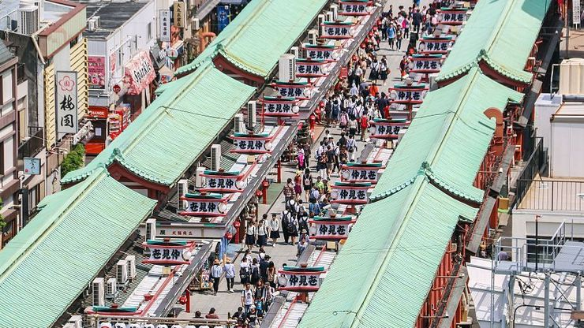
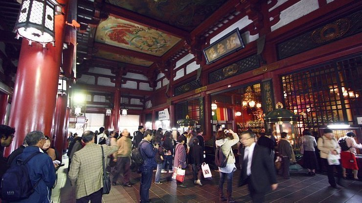

Sensoji
浅草寺

Sensoji (浅草寺, Sensōji, also known as Asakusa Kannon Temple) is a Buddhist temple located in Asakusa. It is one of Tokyo's most colorful and popular temples.
The legend says that in the year 628, two brothers fished a statue of Kannon, the goddess of mercy, out of the Sumida River, and even though they put the statue back into the river, it always returned to them. Consequently, Sensoji was built nearby for the goddess of Kannon. The temple was completed in 645, making it Tokyo's oldest temple.

When approaching the temple, visitors first enter through the Kaminarimon (Thunder Gate), the outer gate of Sensoji Temple and the symbol of Asakusa and the entire city of Tokyo.
A shopping street of over 200 meters, called Nakamise, leads from the outer gate to the temple's second gate, the Hozomon. Alongside typical Japanese souvenirs such as yukata and folding fans, various traditional local snacks from the Asakusa area are sold along the Nakamise. The shopping street has a history of several centuries.
Beyond the Hozomon Gate stands the temple's main hall and a five storied pagoda. Destroyed in the war, the buildings are relatively recent reconstructions. The Asakusa Shrine, built in the year 1649 by Tokugawa Iemitsu, stands only a few dozen meters to the left of the temple's main building.
Various events are held throughout the year in the Sensoji Temple area. The biggest of them is the Sanja Matsuri, the annual festival of the Asakusa Shrine, held in May. Other events are the Asakusa Samba Carnival in August and the Hagoita-ichi (Hagoita Market) at which decorated wooden paddles used in the traditional game of hanetsuki are sold.
